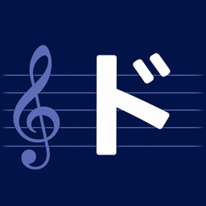

音声 / 音楽
音階チェッカー
マイクの音をリアルタイムに解析し、音階表示付きの動画撮影にも対応した音程確認アプリ。
マイクの音をリアルタイムに解析し、音名・周波数(Hz)・目標音とのセント差を確認できます。音階表示付きの動画撮影モードにも対応し、撮影した動画は写真ライブラリへの保存や共有ができます。
- 音名をリアルタイム表示
- 周波数(Hz)とセント差を表示
- low / in tune / highの簡易ガイド
- 音階表示付き動画撮影・保存
 Lillip Apps
← アプリ一覧に戻る
Lillip Apps
← アプリ一覧に戻る

音声 / 音楽
マイクの音をリアルタイムに解析し、音階表示付きの動画撮影にも対応した音程確認アプリ。
マイクの音をリアルタイムに解析し、音名・周波数(Hz)・目標音とのセント差を確認できます。音階表示付きの動画撮影モードにも対応し、撮影した動画は写真ライブラリへの保存や共有ができます。